Wright Lab
Biodiversity & Ecosystem Function

The Wright Lab studies the causes and consequences of changing biodiversity across the planet — how environmental modification by organisms shapes community structure and ecosystem function, and which aspects of biodiversity most regulate that function in return. We work in any system, on any organism, that helps answer the question, combining observational and experimental approaches with modeling to build towards synthetic ecological theory. Current work spans saltwater intrusion on the North Carolina coastal plain, the ecological consequences of intraspecific trait variability, and what happens when microbial communities collide.